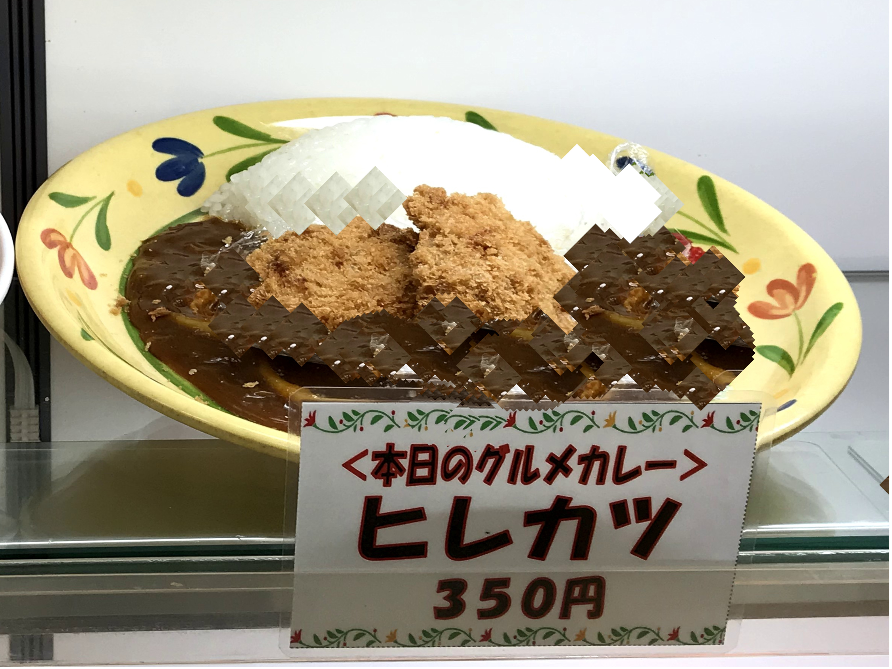
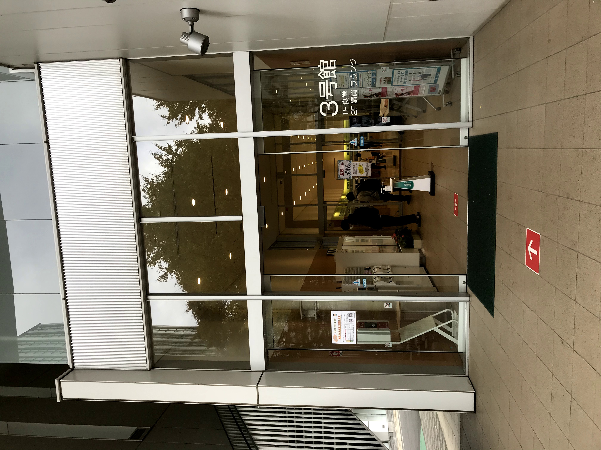

千葉工大の学食のメニューを見てみよう!

ここでは，千葉工大の学食のメニューについてみることができます。
うどんやそば，カレー，そして人気の日替わりの工大ランチなど,安い！早い！美味い！メニューが目白押し！！
千葉工大の学食の使い方を見てみよう！

ここでは，初めての人にも千葉工大の学食の使い方が分かるように説明してます。
ルールを守って、楽しい食事をしましょう！
学食の場所を知ろう!

ここでは，千葉工大の学食の場所を確認することができます。
津田沼校舎と新習志野校舎にそれぞれ1つずつあります!